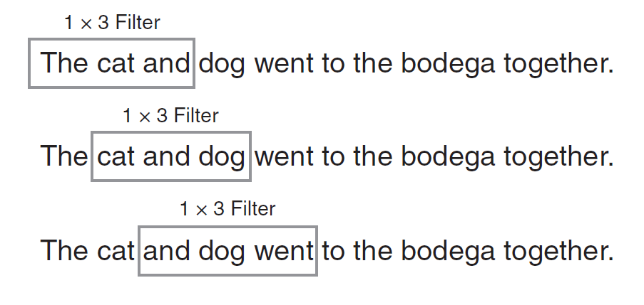
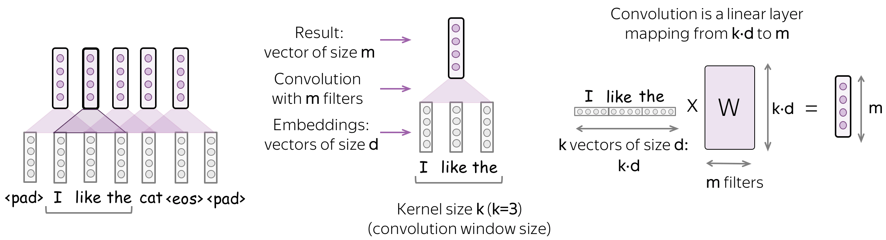

7.2 CNNs for Text
1-D convolutions over a sequence of embeddings.
These notes walk through the lecture slides. The original deck is unchanged; use (slides) on the course hub if you want that PDF.
1. One dimension is the sentence
A page of words is not a 2-D image. Line breaks are arbitrary. Vertical neighbors are an accident of wrap. The structure you want is along the sequence: token (t) next to token (t+1).
So the convolution is 1-D. The filter moves left to right (or top to bottom in a vertical script). It does not slide down the embedding axis.

Japanese written in columns is the same idea on the other axis. You still have one travel dimension.
Figures follow Voita’s NLP course and Natural Language Processing in Action.
2. The “image” is an embedding matrix
Each token is a (d)-dimensional vector (Word2Vec, GloVe, or a learned embedding layer). A sentence of (T) tokens is a matrix (T \times d). Think of (d) as the “height” of a one-pixel-wide strip.
A 1-D filter of width (k) covers (k) tokens and the entire embedding of each. It does not look at 3 of 300 coordinates. That is why “1-D” can sound wrong: the patch is (k \times d), but it moves only along time.

One filter = one feature (a detector for some local pattern). You want many features, so you use many filters. Each reads the same sentence and writes one channel.
3. The knobs
| Knob | Meaning on text | Typical values |
|---|---|---|
| Kernel size | How many tokens the filter sees | 2–5 |
| Stride | How far the filter jumps | 1 |
| Padding | Extra zero vectors on both ends | enough to keep length, or none |
| Bias | Extra add after the dot product | often off by default |
Kernel size 2 is a learned bigram detector. Kernel size 3–5 sees a short phrase. You will stack several sizes in note 7.3 instead of betting on one (k).
Stride 1 is the default: every token is a possible start. Stride (> 1) skips starts; you may need padding so the last tokens are still seen.
Padding appends zero vectors (not the string "PAD" as letters). With stride (> 1) you almost always pad.
Bias is an optional (+b) after the linear map. Many text CNN diagrams omit it.
4. Pooling after the filters
Each filter writes a sequence of activations, one per window. Pooling summarizes a region (or the whole sentence).
Max pooling keeps the strongest fire: “did this pattern appear anywhere?” Mean pooling averages. Both shrink the time axis so the next layer sees fewer parameters.
Global max-over-time (note 7.3) collapses each filter’s sequence to one number. The sentence becomes a vector of length n_filters, regardless of how long it was. That is how a CNN becomes a classifier head.
5. What this buys you versus BoW
A unigram bag cannot see not good. A bigram bag can, but only as an exact string, and the column count explodes. A 2-wide filter over embeddings can fire on not good, not great, not terrible if those phrases sit in similar embedding neighborhoods. The pattern is learned, not listed.
You still do not get long-distance syntax for free. A kernel of 5 will not bind hull to shone across a clause. That is the RNN week.
Shapes, once. Batch of 32 sentences, padded to length 40, 100-D embeddings: input (32, 40, 100). Sixty-four filters of width 3, valid padding: activations (32, 38, 64). Global max pool: (32, 64). That last tensor is what a logistic head classifies. If your error says rank 3 where you wanted rank 2, you forgot the pool.
6. Compared with a bigram bag
A BoN column is an exact string. A kernel of size 2 is a linear template in embedding space. not good and not great can both fire the same filter if good and great are close. That is the reason to embed first, then convolve, instead of only counting strings.
You still need enough labeled examples for those templates to be learned. On a tiny set, the exact bigram column can win.
7. Practice
-
A sentence is 12 tokens with 100-D embeddings. A kernel of size 3, stride 1, no padding: how many time steps does one filter produce?
-
Why does a 1-D text filter cover the full embedding dimension in one shot?
-
You want a detector for negation plus an adjective. Which kernel sizes would you try first, and why not 15?